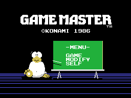
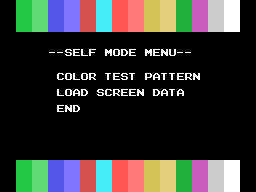
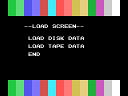
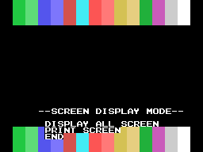
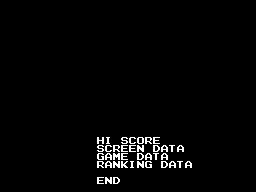
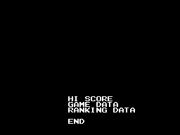
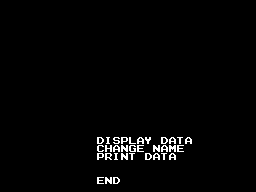
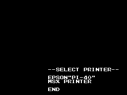

The screens
Not one of these pictures is a capture. They all come from running in Python the same steps the Z80 runs, and they are checked byte for byte against openMSX's VRAM.
What the check says
make vram lets the cartridge run, dumps the 16,384 bytes of VRAM at five moments and compares them with the ones we build. The best dump comes down to a single differing byte, and that byte is not a mistake:
| area | differing |
|---|---|
colour table, 0x0000–0x17FF | 0 of 6,144 |
sprite patterns, 0x1800–0x1FFF | 0 of 2,048 |
pattern table, 0x2000–0x37FF | 0 of 6,144 |
name table, 0x3800–0x3AFF | 1 of 768 |
sprite attributes, 0x3B00–0x3B7F | 0 of 128 |
That byte is 0x39A9: the emulator has 0xF5 and we have 0xAC. They are the two states of the blinking cursor, which 0x527C alternates every 0x8000 turns of the counter at 0xD147.
At other moments eighteen bytes differ, and they are the other thing that moves: 0x3B08–0x3B17 holding the sprite attributes from 0x798F instead of those from 0x797F, plus the tiles that go with them. That is the menu's ornament, which 0x52C3 switches with bit 0 of 0xD144. Any given dump lands on one of the two frames.
The emulator also confirmed the seven VDP registers at 0x6284, R3=0x7F and R4=0x07 included.
The title screen

Six pieces, in this order (0x77D6 and 0x7805): the four compressed background blocks, two character rectangles, the label block with the © KONAMI 1986 that dates the build, another two compressed blocks and the 24 bytes of sprite attributes.
Building it has an ordering trap. The RANKING mode's background is loaded before the title, and its colour table appears gradually: 0x533B fills it with 0xF0 at 21 bytes a pass, six passes, 0x0880–0x0C6F exactly. Placed at the end, that fill eats the 0xFC that 0x780D leaves at 0x0980 and the colours 0x77E4 drops at 0x0C00: 448 bytes of difference against the emulator.
The three start-up pointers



0x4FA9, 0x4FB5 and 0x4FC1: twelve tiles each, three rows of four — the bc,0x0304 at 0x4F91 — always painted in the same place, VRAM 0x39AB. Read as bytes they say nothing. Drawn, you can see what they are: a chalk pointer that changes its slant to aim at GAME, MODIFY or SELF on the blackboard.
The menus that build their own screen





These clear 0x200 bytes from 0x3880 and paint the colour bands at top and bottom. The bands are not a stored picture: the loop at 0x504E writes them, repeating each tile twice and advancing, with B=0x10, that is 32 bytes — a whole row — per turn; since A starts at 1 and wraps with and 0x0F, the row comes out 1,1,2,2,…,15,15,0,0. The dec c at 0x505F repeats it four times, and 0x503C does all of that twice: rows 0 to 3 and rows 20 to 23.
The menus that open over the game





These only clear 0x100 bytes from 0x3A00, the bottom eight rows. On a real machine the top half is the game still running: 0x4275 first calls the routine that carries the game's VRAM into RAM so it can be put back. Here they show on black because there is no game to put.
That the load menu has no SCREEN DATA is not an oversight: it does not fit on tape.